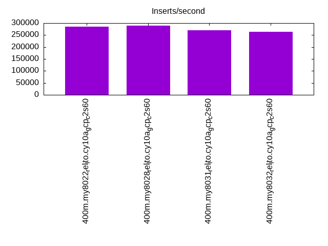
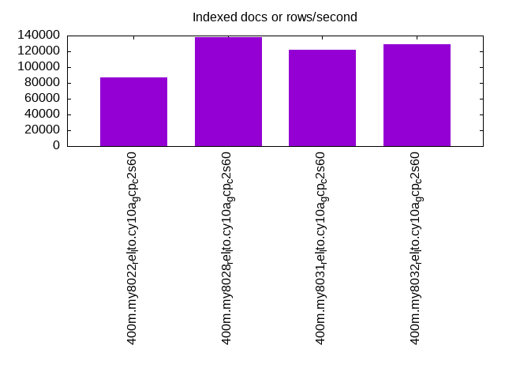
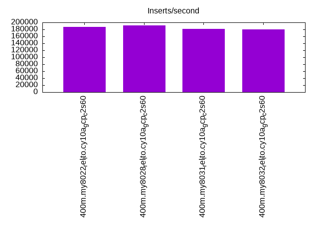
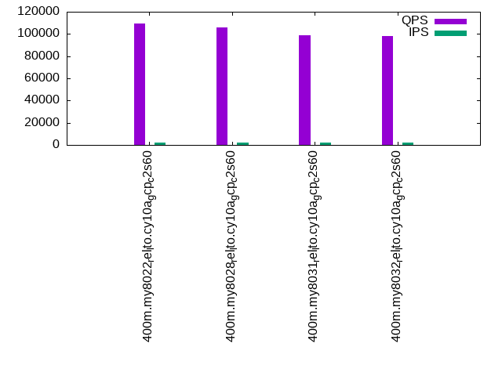
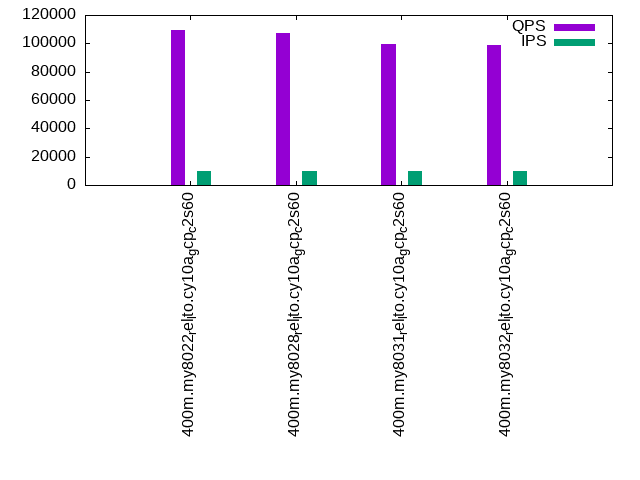
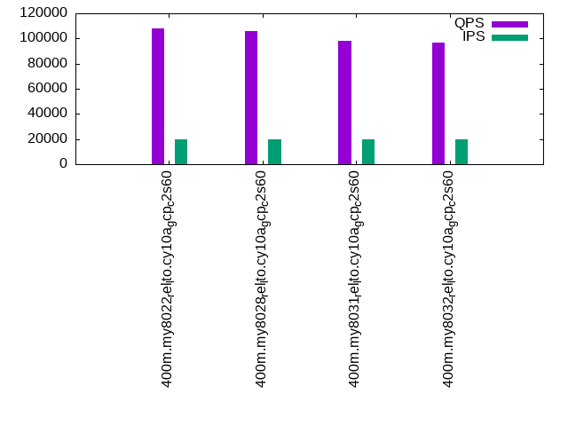

This is a report for the insert benchmark with 400M docs and 20 client(s). It is generated by scripts (bash, awk, sed) and Tufte might not be impressed. An overview of the insert benchmark is here and a short update is here. Below, by DBMS, I mean DBMS+version.config. An example is my8020.c10b40 where my means MySQL, 8020 is version 8.0.20 and c10b40 is the name for the configuration file.
This is a report for the insert benchmark with 400M docs and 20 client(s). It is generated by scripts (bash, awk, sed) and Tufte might not be impressed. An overview of the insert benchmark is here and a short update is here. Below, by DBMS, I mean DBMS+version.config. An example is my8020.c10b40 where my means MySQL, 8020 is version 8.0.20 and c10b40 is the name for the configuration file.The test server is c2-standard-60 from GCP with 30 cores, hyperthreads disabled, 240G RAM and 3T of NVMe (XFS with RAID0 over 8 devices). The benchmark was run with 20 clients and there were 1 or 2 connections per client (1 for queries, 1 for inserts). It uses 1 table. It loads 400M rows per table without secondary indexes, creates secondary indexes, loads another 400M rows per table then does 3 read+write tests for one hour each that do queries as fast as possible with 100, 500 and then 1000 writes/second/client concurrent with the queries. The database is cached by the storage engine and the only IO is for writes. Clients and the DBMS share one server. The per-database configs are in the per-database subdirectories here.
The tested DBMS are:
The numbers are inserts/s for l.i0 and l.i1, indexed docs (or rows) /s for l.x and queries/s for q*.2. The values are the average rate over the entire test for inserts (IPS) and queries (QPS). The range of values for IPS and QPS is split into 3 parts: bottom 25%, middle 50%, top 25%. Values in the bottom 25% have a red background, values in the top 25% have a green background and values in the middle have no color. A gray background is used for values that can be ignored because the DBMS did not sustain the target insert rate. Red backgrounds are not used when the minimum value is within 80% of the max value.
| dbms | l.i0 | l.x | l.i1 | q100.1 | q500.1 | q1000.1 |
|---|---|---|---|---|---|---|
| 400m.my8022_rel_lto.cy10a_gcp_c2s60 | 284698 | 87016 | 186567 | 109647 | 109452 | 108198 |
| 400m.my8028_rel_lto.cy10a_gcp_c2s60 | 289645 | 137966 | 191663 | 105801 | 107448 | 105541 |
| 400m.my8031_rel_lto.cy10a_gcp_c2s60 | 268998 | 122317 | 180914 | 99113 | 99607 | 97977 |
| 400m.my8032_rel_lto.cy10a_gcp_c2s60 | 264201 | 128650 | 179453 | 98197 | 98890 | 97010 |
This table has relative throughput, throughput for the DBMS relative to the DBMS in the first line, using the absolute throughput from the previous table.
| dbms | l.i0 | l.x | l.i1 | q100.1 | q500.1 | q1000.1 |
|---|---|---|---|---|---|---|
| 400m.my8022_rel_lto.cy10a_gcp_c2s60 | 1.00 | 1.00 | 1.00 | 1.00 | 1.00 | 1.00 |
| 400m.my8028_rel_lto.cy10a_gcp_c2s60 | 1.02 | 1.59 | 1.03 | 0.96 | 0.98 | 0.98 |
| 400m.my8031_rel_lto.cy10a_gcp_c2s60 | 0.94 | 1.41 | 0.97 | 0.90 | 0.91 | 0.91 |
| 400m.my8032_rel_lto.cy10a_gcp_c2s60 | 0.93 | 1.48 | 0.96 | 0.90 | 0.90 | 0.90 |
This lists the average rate of inserts/s for the tests that do inserts concurrent with queries. For such tests the query rate is listed in the table above. The read+write tests are setup so that the insert rate should match the target rate every second. Cells that are not at least 95% of the target have a red background to indicate a failure to satisfy the target.
| dbms | q100.1 | q500.1 | q1000.1 |
|---|---|---|---|
| my8022_rel_lto.cy10a_gcp_c2s60 | 1976 | 9885 | 19780 |
| my8028_rel_lto.cy10a_gcp_c2s60 | 1976 | 9890 | 19769 |
| my8031_rel_lto.cy10a_gcp_c2s60 | 1976 | 9885 | 19769 |
| my8032_rel_lto.cy10a_gcp_c2s60 | 1977 | 9885 | 19769 |
| target | 2000 | 10000 | 20000 |
l.i0: load without secondary indexes. Graphs for performance per 1-second interval are here.
Average throughput:
Insert response time histogram: each cell has the percentage of responses that take <= the time in the header and max is the max response time in seconds. For the max column values in the top 25% of the range have a red background and in the bottom 25% of the range have a green background. The red background is not used when the min value is within 80% of the max value.
| dbms | 256us | 1ms | 4ms | 16ms | 64ms | 256ms | 1s | 4s | 16s | gt | max |
|---|---|---|---|---|---|---|---|---|---|---|---|
| my8022_rel_lto.cy10a_gcp_c2s60 | 0.313 | 0.843 | 98.779 | 0.026 | 0.038 | 0.228 | |||||
| my8028_rel_lto.cy10a_gcp_c2s60 | 0.324 | 0.916 | 98.688 | 0.036 | 0.036 | nonzero | 0.270 | ||||
| my8031_rel_lto.cy10a_gcp_c2s60 | 0.294 | 0.655 | 98.972 | 0.043 | 0.037 | 0.253 | |||||
| my8032_rel_lto.cy10a_gcp_c2s60 | 0.290 | 0.559 | 99.070 | 0.044 | 0.037 | 0.235 |
Performance metrics for the DBMS listed above. Some are normalized by throughput, others are not. Legend for results is here.
ips qps rps rmbps wps wmbps rpq rkbpq wpi wkbpi csps cpups cspq cpupq dbgb1 dbgb2 rss maxop p50 p99 tag 284698 0 0 0.0 672.2 99.4 0.000 0.000 0.002 0.358 302314 57.7 1.062 61 44.7 173.3 9.2 0.228 14384 11886 400m.my8022_rel_lto.cy10a_gcp_c2s60 289645 0 0 0.0 646.1 91.2 0.000 0.000 0.002 0.322 282769 58.9 0.976 61 44.6 173.1 9.3 0.270 14684 11887 400m.my8028_rel_lto.cy10a_gcp_c2s60 268998 0 0 0.0 625.6 81.7 0.000 0.000 0.002 0.311 245872 59.4 0.914 66 44.5 173.1 9.3 0.253 13685 10992 400m.my8031_rel_lto.cy10a_gcp_c2s60 264201 0 0 0.0 614.4 65.4 0.000 0.000 0.002 0.254 248761 59.6 0.942 68 44.5 173.0 9.3 0.235 13385 10888 400m.my8032_rel_lto.cy10a_gcp_c2s60
l.x: create secondary indexes.
Average throughput:
Performance metrics for the DBMS listed above. Some are normalized by throughput, others are not. Legend for results is here.
ips qps rps rmbps wps wmbps rpq rkbpq wpi wkbpi csps cpups cspq cpupq dbgb1 dbgb2 rss maxop p50 p99 tag 87016 0 0 0.0 1298.6 96.3 0.000 0.000 0.015 1.133 12722 3.0 0.146 10 77.1 205.7 9.3 0.007 NA NA 400m.my8022_rel_lto.cy10a_gcp_c2s60 137966 0 692 47.4 3230.2 167.0 0.005 0.352 0.023 1.239 21608 10.7 0.157 23 77.0 205.6 9.3 0.005 NA NA 400m.my8028_rel_lto.cy10a_gcp_c2s60 122317 0 613 42.1 2861.4 148.1 0.005 0.352 0.023 1.240 19572 10.8 0.160 26 76.9 205.5 9.3 0.005 NA NA 400m.my8031_rel_lto.cy10a_gcp_c2s60 128650 0 645 44.4 3005.9 155.8 0.005 0.353 0.023 1.240 20556 10.5 0.160 24 76.9 205.4 9.3 0.006 NA NA 400m.my8032_rel_lto.cy10a_gcp_c2s60
l.i1: continue load after secondary indexes created. Graphs for performance per 1-second interval are here.
Average throughput:
Insert response time histogram: each cell has the percentage of responses that take <= the time in the header and max is the max response time in seconds. For the max column values in the top 25% of the range have a red background and in the bottom 25% of the range have a green background. The red background is not used when the min value is within 80% of the max value.
| dbms | 256us | 1ms | 4ms | 16ms | 64ms | 256ms | 1s | 4s | 16s | gt | max |
|---|---|---|---|---|---|---|---|---|---|---|---|
| my8022_rel_lto.cy10a_gcp_c2s60 | 5.099 | 94.489 | 0.261 | 0.151 | nonzero | 0.312 | |||||
| my8028_rel_lto.cy10a_gcp_c2s60 | 6.500 | 93.124 | 0.241 | 0.135 | 0.250 | ||||||
| my8031_rel_lto.cy10a_gcp_c2s60 | 2.116 | 97.483 | 0.246 | 0.154 | nonzero | 0.283 | |||||
| my8032_rel_lto.cy10a_gcp_c2s60 | 1.652 | 97.945 | 0.246 | 0.157 | nonzero | 0.279 |
Performance metrics for the DBMS listed above. Some are normalized by throughput, others are not. Legend for results is here.
ips qps rps rmbps wps wmbps rpq rkbpq wpi wkbpi csps cpups cspq cpupq dbgb1 dbgb2 rss maxop p50 p99 tag 186567 0 10 0.1 5389.5 255.7 0.000 0.001 0.029 1.403 256301 59.9 1.374 96 183.1 311.7 9.2 0.312 9939 400 400m.my8022_rel_lto.cy10a_gcp_c2s60 191663 0 4 0.1 5291.2 253.0 0.000 0.000 0.028 1.352 257029 60.6 1.341 95 183.2 311.8 9.3 0.250 10139 450 400m.my8028_rel_lto.cy10a_gcp_c2s60 180914 0 2 0.0 6351.7 283.8 0.000 0.000 0.035 1.607 230266 61.0 1.273 101 183.0 311.5 9.3 0.283 9598 400 400m.my8031_rel_lto.cy10a_gcp_c2s60 179453 0 33 0.6 6343.5 281.7 0.000 0.003 0.035 1.607 230919 61.2 1.287 102 182.8 311.4 9.3 0.279 9540 400 400m.my8032_rel_lto.cy10a_gcp_c2s60
q100.1: range queries with 100 insert/s per client. Graphs for performance per 1-second interval are here.
Average throughput:
Query response time histogram: each cell has the percentage of responses that take <= the time in the header and max is the max response time in seconds. For max values in the top 25% of the range have a red background and in the bottom 25% of the range have a green background. The red background is not used when the min value is within 80% of the max value.
| dbms | 256us | 1ms | 4ms | 16ms | 64ms | 256ms | 1s | 4s | 16s | gt | max |
|---|---|---|---|---|---|---|---|---|---|---|---|
| my8022_rel_lto.cy10a_gcp_c2s60 | 97.698 | 2.281 | 0.021 | nonzero | nonzero | 0.027 | |||||
| my8028_rel_lto.cy10a_gcp_c2s60 | 97.436 | 2.537 | 0.027 | nonzero | nonzero | 0.028 | |||||
| my8031_rel_lto.cy10a_gcp_c2s60 | 95.664 | 4.305 | 0.031 | nonzero | nonzero | 0.024 | |||||
| my8032_rel_lto.cy10a_gcp_c2s60 | 95.267 | 4.694 | 0.038 | nonzero | nonzero | 0.023 |
Insert response time histogram: each cell has the percentage of responses that take <= the time in the header and max is the max response time in seconds. For max values in the top 25% of the range have a red background and in the bottom 25% of the range have a green background. The red background is not used when the min value is within 80% of the max value.
| dbms | 256us | 1ms | 4ms | 16ms | 64ms | 256ms | 1s | 4s | 16s | gt | max |
|---|---|---|---|---|---|---|---|---|---|---|---|
| my8022_rel_lto.cy10a_gcp_c2s60 | 81.647 | 18.146 | 0.207 | 0.031 | |||||||
| my8028_rel_lto.cy10a_gcp_c2s60 | 84.361 | 15.568 | 0.071 | 0.023 | |||||||
| my8031_rel_lto.cy10a_gcp_c2s60 | 86.426 | 13.482 | 0.092 | 0.027 | |||||||
| my8032_rel_lto.cy10a_gcp_c2s60 | 86.544 | 13.356 | 0.100 | 0.030 |
Performance metrics for the DBMS listed above. Some are normalized by throughput, others are not. Legend for results is here.
ips qps rps rmbps wps wmbps rpq rkbpq wpi wkbpi csps cpups cspq cpupq dbgb1 dbgb2 rss maxop p50 p99 tag 1976 109647 129 5.1 1342.2 49.1 0.001 0.048 0.679 25.422 403672 65.3 3.682 179 185.3 313.9 9.2 0.027 5500 5178 400m.my8022_rel_lto.cy10a_gcp_c2s60 1976 105801 202 6.0 1402.4 50.6 0.002 0.058 0.710 26.249 392890 65.5 3.713 186 185.5 314.0 9.3 0.028 5356 4908 400m.my8028_rel_lto.cy10a_gcp_c2s60 1976 99113 152 5.2 1595.2 59.1 0.002 0.053 0.807 30.612 372230 65.8 3.756 199 185.2 313.8 9.3 0.024 5066 4411 400m.my8031_rel_lto.cy10a_gcp_c2s60 1977 98197 178 5.7 1595.5 59.0 0.002 0.059 0.807 30.576 369231 65.7 3.760 201 185.0 313.6 9.3 0.023 5005 3549 400m.my8032_rel_lto.cy10a_gcp_c2s60
q500.1: range queries with 500 insert/s per client. Graphs for performance per 1-second interval are here.
Average throughput:
Query response time histogram: each cell has the percentage of responses that take <= the time in the header and max is the max response time in seconds. For max values in the top 25% of the range have a red background and in the bottom 25% of the range have a green background. The red background is not used when the min value is within 80% of the max value.
| dbms | 256us | 1ms | 4ms | 16ms | 64ms | 256ms | 1s | 4s | 16s | gt | max |
|---|---|---|---|---|---|---|---|---|---|---|---|
| my8022_rel_lto.cy10a_gcp_c2s60 | 97.817 | 2.150 | 0.032 | 0.002 | nonzero | 0.027 | |||||
| my8028_rel_lto.cy10a_gcp_c2s60 | 97.849 | 2.119 | 0.030 | 0.001 | nonzero | 0.028 | |||||
| my8031_rel_lto.cy10a_gcp_c2s60 | 96.215 | 3.750 | 0.033 | 0.002 | nonzero | 0.028 | |||||
| my8032_rel_lto.cy10a_gcp_c2s60 | 96.017 | 3.948 | 0.034 | 0.002 | nonzero | 0.024 |
Insert response time histogram: each cell has the percentage of responses that take <= the time in the header and max is the max response time in seconds. For max values in the top 25% of the range have a red background and in the bottom 25% of the range have a green background. The red background is not used when the min value is within 80% of the max value.
| dbms | 256us | 1ms | 4ms | 16ms | 64ms | 256ms | 1s | 4s | 16s | gt | max |
|---|---|---|---|---|---|---|---|---|---|---|---|
| my8022_rel_lto.cy10a_gcp_c2s60 | 29.107 | 65.587 | 5.306 | 0.049 | |||||||
| my8028_rel_lto.cy10a_gcp_c2s60 | 31.898 | 64.369 | 3.734 | 0.046 | |||||||
| my8031_rel_lto.cy10a_gcp_c2s60 | 27.689 | 67.398 | 4.914 | 0.049 | |||||||
| my8032_rel_lto.cy10a_gcp_c2s60 | 26.982 | 67.736 | 5.281 | 0.047 |
Performance metrics for the DBMS listed above. Some are normalized by throughput, others are not. Legend for results is here.
ips qps rps rmbps wps wmbps rpq rkbpq wpi wkbpi csps cpups cspq cpupq dbgb1 dbgb2 rss maxop p50 p99 tag 9885 109452 6 0.1 491.5 26.2 0.000 0.001 0.050 2.714 391676 66.6 3.579 183 194.9 323.4 9.2 0.027 5514 5290 400m.my8022_rel_lto.cy10a_gcp_c2s60 9890 107448 6 0.1 478.3 25.7 0.000 0.001 0.048 2.664 382691 67.1 3.562 187 195.0 323.6 9.3 0.028 5354 5117 400m.my8028_rel_lto.cy10a_gcp_c2s60 9885 99607 6 0.1 540.7 27.0 0.000 0.001 0.055 2.793 359533 66.6 3.610 201 194.7 323.3 9.3 0.028 5050 4764 400m.my8031_rel_lto.cy10a_gcp_c2s60 9885 98890 6 0.1 534.8 26.8 0.000 0.001 0.054 2.778 356034 66.7 3.600 202 194.6 323.1 9.3 0.024 4907 4635 400m.my8032_rel_lto.cy10a_gcp_c2s60
q1000.1: range queries with 1000 insert/s per client. Graphs for performance per 1-second interval are here.
Average throughput:
Query response time histogram: each cell has the percentage of responses that take <= the time in the header and max is the max response time in seconds. For max values in the top 25% of the range have a red background and in the bottom 25% of the range have a green background. The red background is not used when the min value is within 80% of the max value.
| dbms | 256us | 1ms | 4ms | 16ms | 64ms | 256ms | 1s | 4s | 16s | gt | max |
|---|---|---|---|---|---|---|---|---|---|---|---|
| my8022_rel_lto.cy10a_gcp_c2s60 | 97.812 | 2.147 | 0.035 | 0.006 | nonzero | 0.028 | |||||
| my8028_rel_lto.cy10a_gcp_c2s60 | 97.753 | 2.206 | 0.037 | 0.004 | nonzero | 0.041 | |||||
| my8031_rel_lto.cy10a_gcp_c2s60 | 96.010 | 3.943 | 0.042 | 0.005 | nonzero | 0.024 | |||||
| my8032_rel_lto.cy10a_gcp_c2s60 | 95.606 | 4.346 | 0.043 | 0.005 | nonzero | 0.028 |
Insert response time histogram: each cell has the percentage of responses that take <= the time in the header and max is the max response time in seconds. For max values in the top 25% of the range have a red background and in the bottom 25% of the range have a green background. The red background is not used when the min value is within 80% of the max value.
| dbms | 256us | 1ms | 4ms | 16ms | 64ms | 256ms | 1s | 4s | 16s | gt | max |
|---|---|---|---|---|---|---|---|---|---|---|---|
| my8022_rel_lto.cy10a_gcp_c2s60 | 41.425 | 55.991 | 2.581 | 0.003 | 0.119 | ||||||
| my8028_rel_lto.cy10a_gcp_c2s60 | 41.154 | 56.690 | 2.156 | 0.063 | |||||||
| my8031_rel_lto.cy10a_gcp_c2s60 | 37.850 | 59.159 | 2.991 | 0.050 | |||||||
| my8032_rel_lto.cy10a_gcp_c2s60 | 37.939 | 59.081 | 2.980 | 0.056 |
Performance metrics for the DBMS listed above. Some are normalized by throughput, others are not. Legend for results is here.
ips qps rps rmbps wps wmbps rpq rkbpq wpi wkbpi csps cpups cspq cpupq dbgb1 dbgb2 rss maxop p50 p99 tag 19780 108198 9 0.1 952.4 39.4 0.000 0.001 0.048 2.042 377430 68.1 3.488 189 206.0 334.6 9.2 0.028 5466 5258 400m.my8022_rel_lto.cy10a_gcp_c2s60 19769 105541 10 0.2 1104.6 42.7 0.000 0.002 0.056 2.211 369563 68.5 3.502 195 206.2 334.7 9.3 0.041 5354 5098 400m.my8028_rel_lto.cy10a_gcp_c2s60 19769 97977 10 0.2 2109.5 67.7 0.000 0.002 0.107 3.508 348536 68.8 3.557 211 205.9 334.5 9.3 0.024 5003 4719 400m.my8031_rel_lto.cy10a_gcp_c2s60 19769 97010 10 0.2 2133.9 68.4 0.000 0.002 0.108 3.542 345051 68.8 3.557 213 205.7 334.3 9.3 0.028 4923 4667 400m.my8032_rel_lto.cy10a_gcp_c2s60
l.i0: load without secondary indexes
Performance metrics for all DBMS, not just the ones listed above. Some are normalized by throughput, others are not. Legend for results is here.
ips qps rps rmbps wps wmbps rpq rkbpq wpi wkbpi csps cpups cspq cpupq dbgb1 dbgb2 rss maxop p50 p99 tag 284698 0 0 0.0 672.2 99.4 0.000 0.000 0.002 0.358 302314 57.7 1.062 61 44.7 173.3 9.2 0.228 14384 11886 400m.my8022_rel_lto.cy10a_gcp_c2s60 289645 0 0 0.0 646.1 91.2 0.000 0.000 0.002 0.322 282769 58.9 0.976 61 44.6 173.1 9.3 0.270 14684 11887 400m.my8028_rel_lto.cy10a_gcp_c2s60 268998 0 0 0.0 625.6 81.7 0.000 0.000 0.002 0.311 245872 59.4 0.914 66 44.5 173.1 9.3 0.253 13685 10992 400m.my8031_rel_lto.cy10a_gcp_c2s60 264201 0 0 0.0 614.4 65.4 0.000 0.000 0.002 0.254 248761 59.6 0.942 68 44.5 173.0 9.3 0.235 13385 10888 400m.my8032_rel_lto.cy10a_gcp_c2s60
l.x: create secondary indexes
Performance metrics for all DBMS, not just the ones listed above. Some are normalized by throughput, others are not. Legend for results is here.
ips qps rps rmbps wps wmbps rpq rkbpq wpi wkbpi csps cpups cspq cpupq dbgb1 dbgb2 rss maxop p50 p99 tag 87016 0 0 0.0 1298.6 96.3 0.000 0.000 0.015 1.133 12722 3.0 0.146 10 77.1 205.7 9.3 0.007 NA NA 400m.my8022_rel_lto.cy10a_gcp_c2s60 137966 0 692 47.4 3230.2 167.0 0.005 0.352 0.023 1.239 21608 10.7 0.157 23 77.0 205.6 9.3 0.005 NA NA 400m.my8028_rel_lto.cy10a_gcp_c2s60 122317 0 613 42.1 2861.4 148.1 0.005 0.352 0.023 1.240 19572 10.8 0.160 26 76.9 205.5 9.3 0.005 NA NA 400m.my8031_rel_lto.cy10a_gcp_c2s60 128650 0 645 44.4 3005.9 155.8 0.005 0.353 0.023 1.240 20556 10.5 0.160 24 76.9 205.4 9.3 0.006 NA NA 400m.my8032_rel_lto.cy10a_gcp_c2s60
l.i1: continue load after secondary indexes created
Performance metrics for all DBMS, not just the ones listed above. Some are normalized by throughput, others are not. Legend for results is here.
ips qps rps rmbps wps wmbps rpq rkbpq wpi wkbpi csps cpups cspq cpupq dbgb1 dbgb2 rss maxop p50 p99 tag 186567 0 10 0.1 5389.5 255.7 0.000 0.001 0.029 1.403 256301 59.9 1.374 96 183.1 311.7 9.2 0.312 9939 400 400m.my8022_rel_lto.cy10a_gcp_c2s60 191663 0 4 0.1 5291.2 253.0 0.000 0.000 0.028 1.352 257029 60.6 1.341 95 183.2 311.8 9.3 0.250 10139 450 400m.my8028_rel_lto.cy10a_gcp_c2s60 180914 0 2 0.0 6351.7 283.8 0.000 0.000 0.035 1.607 230266 61.0 1.273 101 183.0 311.5 9.3 0.283 9598 400 400m.my8031_rel_lto.cy10a_gcp_c2s60 179453 0 33 0.6 6343.5 281.7 0.000 0.003 0.035 1.607 230919 61.2 1.287 102 182.8 311.4 9.3 0.279 9540 400 400m.my8032_rel_lto.cy10a_gcp_c2s60
q100.1: range queries with 100 insert/s per client
Performance metrics for all DBMS, not just the ones listed above. Some are normalized by throughput, others are not. Legend for results is here.
ips qps rps rmbps wps wmbps rpq rkbpq wpi wkbpi csps cpups cspq cpupq dbgb1 dbgb2 rss maxop p50 p99 tag 1976 109647 129 5.1 1342.2 49.1 0.001 0.048 0.679 25.422 403672 65.3 3.682 179 185.3 313.9 9.2 0.027 5500 5178 400m.my8022_rel_lto.cy10a_gcp_c2s60 1976 105801 202 6.0 1402.4 50.6 0.002 0.058 0.710 26.249 392890 65.5 3.713 186 185.5 314.0 9.3 0.028 5356 4908 400m.my8028_rel_lto.cy10a_gcp_c2s60 1976 99113 152 5.2 1595.2 59.1 0.002 0.053 0.807 30.612 372230 65.8 3.756 199 185.2 313.8 9.3 0.024 5066 4411 400m.my8031_rel_lto.cy10a_gcp_c2s60 1977 98197 178 5.7 1595.5 59.0 0.002 0.059 0.807 30.576 369231 65.7 3.760 201 185.0 313.6 9.3 0.023 5005 3549 400m.my8032_rel_lto.cy10a_gcp_c2s60
q500.1: range queries with 500 insert/s per client
Performance metrics for all DBMS, not just the ones listed above. Some are normalized by throughput, others are not. Legend for results is here.
ips qps rps rmbps wps wmbps rpq rkbpq wpi wkbpi csps cpups cspq cpupq dbgb1 dbgb2 rss maxop p50 p99 tag 9885 109452 6 0.1 491.5 26.2 0.000 0.001 0.050 2.714 391676 66.6 3.579 183 194.9 323.4 9.2 0.027 5514 5290 400m.my8022_rel_lto.cy10a_gcp_c2s60 9890 107448 6 0.1 478.3 25.7 0.000 0.001 0.048 2.664 382691 67.1 3.562 187 195.0 323.6 9.3 0.028 5354 5117 400m.my8028_rel_lto.cy10a_gcp_c2s60 9885 99607 6 0.1 540.7 27.0 0.000 0.001 0.055 2.793 359533 66.6 3.610 201 194.7 323.3 9.3 0.028 5050 4764 400m.my8031_rel_lto.cy10a_gcp_c2s60 9885 98890 6 0.1 534.8 26.8 0.000 0.001 0.054 2.778 356034 66.7 3.600 202 194.6 323.1 9.3 0.024 4907 4635 400m.my8032_rel_lto.cy10a_gcp_c2s60
q1000.1: range queries with 1000 insert/s per client
Performance metrics for all DBMS, not just the ones listed above. Some are normalized by throughput, others are not. Legend for results is here.
ips qps rps rmbps wps wmbps rpq rkbpq wpi wkbpi csps cpups cspq cpupq dbgb1 dbgb2 rss maxop p50 p99 tag 19780 108198 9 0.1 952.4 39.4 0.000 0.001 0.048 2.042 377430 68.1 3.488 189 206.0 334.6 9.2 0.028 5466 5258 400m.my8022_rel_lto.cy10a_gcp_c2s60 19769 105541 10 0.2 1104.6 42.7 0.000 0.002 0.056 2.211 369563 68.5 3.502 195 206.2 334.7 9.3 0.041 5354 5098 400m.my8028_rel_lto.cy10a_gcp_c2s60 19769 97977 10 0.2 2109.5 67.7 0.000 0.002 0.107 3.508 348536 68.8 3.557 211 205.9 334.5 9.3 0.024 5003 4719 400m.my8031_rel_lto.cy10a_gcp_c2s60 19769 97010 10 0.2 2133.9 68.4 0.000 0.002 0.108 3.542 345051 68.8 3.557 213 205.7 334.3 9.3 0.028 4923 4667 400m.my8032_rel_lto.cy10a_gcp_c2s60
Insert response time histogram
256us 1ms 4ms 16ms 64ms 256ms 1s 4s 16s gt max tag 0.000 0.313 0.843 98.779 0.026 0.038 0.000 0.000 0.000 0.000 0.228 my8022_rel_lto.cy10a_gcp_c2s60 0.000 0.324 0.916 98.688 0.036 0.036 nonzero 0.000 0.000 0.000 0.270 my8028_rel_lto.cy10a_gcp_c2s60 0.000 0.294 0.655 98.972 0.043 0.037 0.000 0.000 0.000 0.000 0.253 my8031_rel_lto.cy10a_gcp_c2s60 0.000 0.290 0.559 99.070 0.044 0.037 0.000 0.000 0.000 0.000 0.235 my8032_rel_lto.cy10a_gcp_c2s60
TODO - determine whether there is data for create index response time
Insert response time histogram
256us 1ms 4ms 16ms 64ms 256ms 1s 4s 16s gt max tag 0.000 0.000 5.099 94.489 0.261 0.151 nonzero 0.000 0.000 0.000 0.312 my8022_rel_lto.cy10a_gcp_c2s60 0.000 0.000 6.500 93.124 0.241 0.135 0.000 0.000 0.000 0.000 0.250 my8028_rel_lto.cy10a_gcp_c2s60 0.000 0.000 2.116 97.483 0.246 0.154 nonzero 0.000 0.000 0.000 0.283 my8031_rel_lto.cy10a_gcp_c2s60 0.000 0.000 1.652 97.945 0.246 0.157 nonzero 0.000 0.000 0.000 0.279 my8032_rel_lto.cy10a_gcp_c2s60
Query response time histogram
256us 1ms 4ms 16ms 64ms 256ms 1s 4s 16s gt max tag 97.698 2.281 0.021 nonzero nonzero 0.000 0.000 0.000 0.000 0.000 0.027 my8022_rel_lto.cy10a_gcp_c2s60 97.436 2.537 0.027 nonzero nonzero 0.000 0.000 0.000 0.000 0.000 0.028 my8028_rel_lto.cy10a_gcp_c2s60 95.664 4.305 0.031 nonzero nonzero 0.000 0.000 0.000 0.000 0.000 0.024 my8031_rel_lto.cy10a_gcp_c2s60 95.267 4.694 0.038 nonzero nonzero 0.000 0.000 0.000 0.000 0.000 0.023 my8032_rel_lto.cy10a_gcp_c2s60
Insert response time histogram
256us 1ms 4ms 16ms 64ms 256ms 1s 4s 16s gt max tag 0.000 0.000 81.647 18.146 0.207 0.000 0.000 0.000 0.000 0.000 0.031 my8022_rel_lto.cy10a_gcp_c2s60 0.000 0.000 84.361 15.568 0.071 0.000 0.000 0.000 0.000 0.000 0.023 my8028_rel_lto.cy10a_gcp_c2s60 0.000 0.000 86.426 13.482 0.092 0.000 0.000 0.000 0.000 0.000 0.027 my8031_rel_lto.cy10a_gcp_c2s60 0.000 0.000 86.544 13.356 0.100 0.000 0.000 0.000 0.000 0.000 0.030 my8032_rel_lto.cy10a_gcp_c2s60
Query response time histogram
256us 1ms 4ms 16ms 64ms 256ms 1s 4s 16s gt max tag 97.817 2.150 0.032 0.002 nonzero 0.000 0.000 0.000 0.000 0.000 0.027 my8022_rel_lto.cy10a_gcp_c2s60 97.849 2.119 0.030 0.001 nonzero 0.000 0.000 0.000 0.000 0.000 0.028 my8028_rel_lto.cy10a_gcp_c2s60 96.215 3.750 0.033 0.002 nonzero 0.000 0.000 0.000 0.000 0.000 0.028 my8031_rel_lto.cy10a_gcp_c2s60 96.017 3.948 0.034 0.002 nonzero 0.000 0.000 0.000 0.000 0.000 0.024 my8032_rel_lto.cy10a_gcp_c2s60
Insert response time histogram
256us 1ms 4ms 16ms 64ms 256ms 1s 4s 16s gt max tag 0.000 0.000 29.107 65.587 5.306 0.000 0.000 0.000 0.000 0.000 0.049 my8022_rel_lto.cy10a_gcp_c2s60 0.000 0.000 31.898 64.369 3.734 0.000 0.000 0.000 0.000 0.000 0.046 my8028_rel_lto.cy10a_gcp_c2s60 0.000 0.000 27.689 67.398 4.914 0.000 0.000 0.000 0.000 0.000 0.049 my8031_rel_lto.cy10a_gcp_c2s60 0.000 0.000 26.982 67.736 5.281 0.000 0.000 0.000 0.000 0.000 0.047 my8032_rel_lto.cy10a_gcp_c2s60
Query response time histogram
256us 1ms 4ms 16ms 64ms 256ms 1s 4s 16s gt max tag 97.812 2.147 0.035 0.006 nonzero 0.000 0.000 0.000 0.000 0.000 0.028 my8022_rel_lto.cy10a_gcp_c2s60 97.753 2.206 0.037 0.004 nonzero 0.000 0.000 0.000 0.000 0.000 0.041 my8028_rel_lto.cy10a_gcp_c2s60 96.010 3.943 0.042 0.005 nonzero 0.000 0.000 0.000 0.000 0.000 0.024 my8031_rel_lto.cy10a_gcp_c2s60 95.606 4.346 0.043 0.005 nonzero 0.000 0.000 0.000 0.000 0.000 0.028 my8032_rel_lto.cy10a_gcp_c2s60
Insert response time histogram
256us 1ms 4ms 16ms 64ms 256ms 1s 4s 16s gt max tag 0.000 0.000 41.425 55.991 2.581 0.003 0.000 0.000 0.000 0.000 0.119 my8022_rel_lto.cy10a_gcp_c2s60 0.000 0.000 41.154 56.690 2.156 0.000 0.000 0.000 0.000 0.000 0.063 my8028_rel_lto.cy10a_gcp_c2s60 0.000 0.000 37.850 59.159 2.991 0.000 0.000 0.000 0.000 0.000 0.050 my8031_rel_lto.cy10a_gcp_c2s60 0.000 0.000 37.939 59.081 2.980 0.000 0.000 0.000 0.000 0.000 0.056 my8032_rel_lto.cy10a_gcp_c2s60